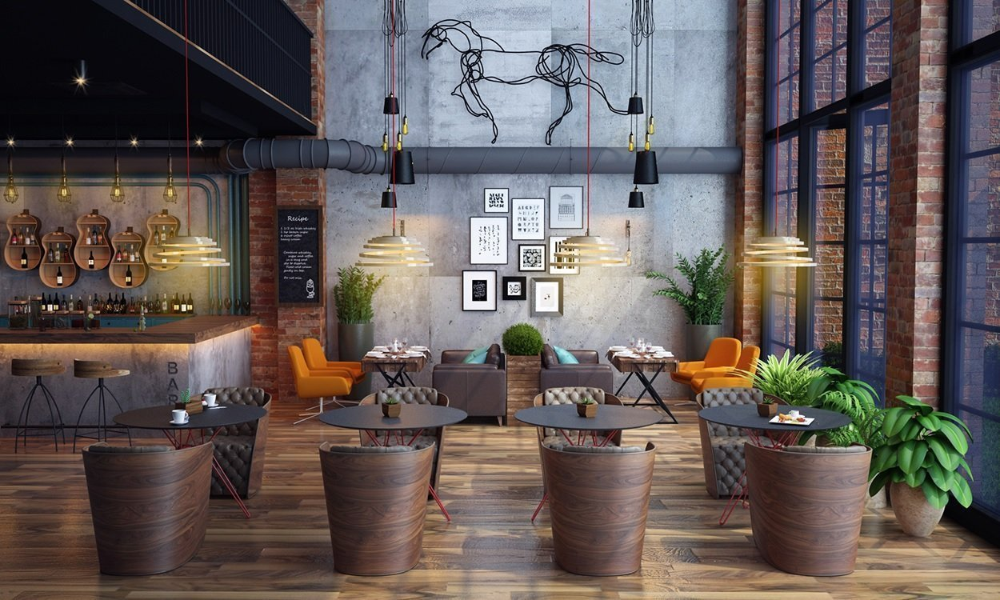
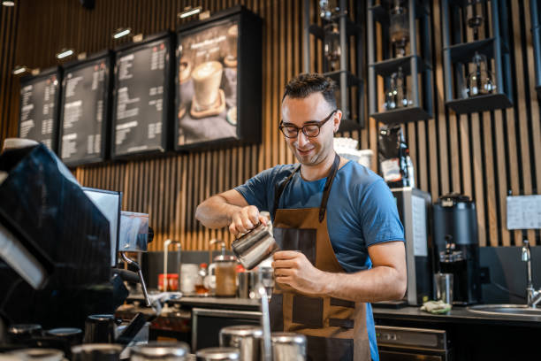

100%
Arabica kávé
15+
Kávé különlegesség
0-24h
Friss pörkölés
Rólunk
Ahol a kávé iránti szenvedély találkozik a minőséggel
Minőségi Alapanyagok
Kizárólag fenntartható forrásból származó, kézzel válogatott kávébabokat használunk, amelyeket helyben pörkölünk.
Otthonos Hangulat
Célunk egy olyan közösségi tér megteremtése volt, ahol a rohanó hétköznapokban is megállhatsz egy pillanatra feltöltődni.
„A jó nap egy jól elkészített kávéval és egy mosollyal kezdődik.”
Kínálatunkból
Klasszikus és újhullámos kedvencek
Elvihető Szemes Kávéink
Vidd haza a Bean & Brew élményt (250g-os kiszerelés)
| Kávé Fajtája | Pörkölési Szint | Ízjegyek | Ár (250g) |
|---|---|---|---|
| Ethiopia Yirgacheffe | Világos | Jázmin, citrusok, bergamott | 3 400 Ft |
| Brazil Santos | Közepes | Csokoládé, mogyoró, karamell | 2 900 Ft |
| Colombia Supremo | Közepes / Sötét | Piros bogyós gyümölcsök, kakó | 3 100 Ft |
| House Blend (Ház Keveréke) | Közepes | Mogyoró, étcsoki, kiegyensúlyozott | 2 700 Ft |
Hangulatképek


Nyitvatartás
Hétfő – Csütörtök
07:30 – 19:00
Péntek – Szombat
08:00 – 21:00
Vasárnap
09:00 – 18:00
Kapcsolat & Helyszín
Cím: 4025 Debrecen, Kávéházi utca 12.
Telefon: +36 52 987 654
E-mail: info@beanandbrew.hu
Várunk szeretettel! Asztalfoglalás telefonon vagy e-mailben lehetséges.
Üzenet küldése